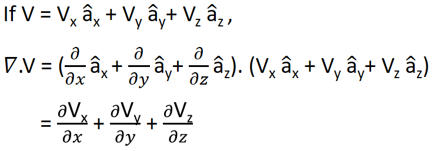
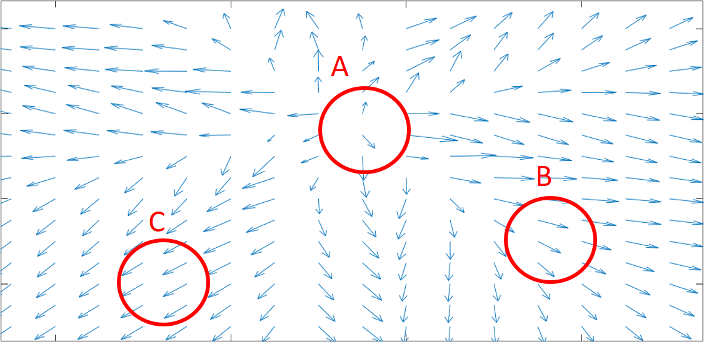
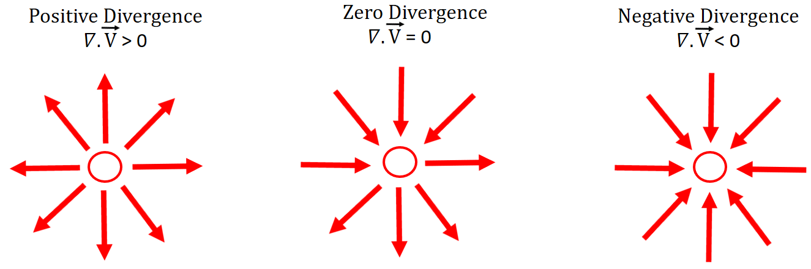
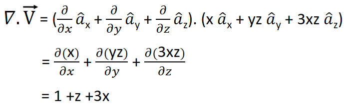
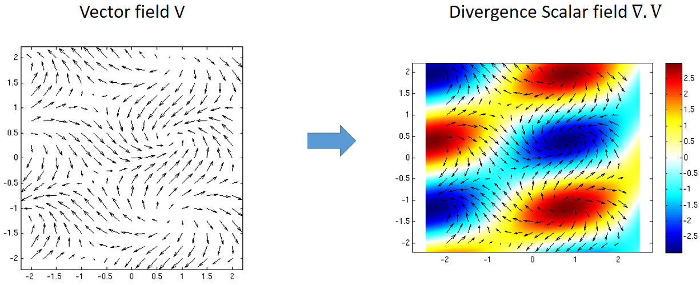

HOME BLOG EBOOKS ABOUT CONTACT SHOP
We saw how the del operator can be applied on a scalar function in the form of the gradient. On a vector field the del operator can be applied in 2 ways, first of which is the Divergence.
Mathematically, the Divergence is nothing but the dot product between the del operator and a vector field.

Intuitively, the Divergence represents the outward flow of a vector field from an infinitesimal volume at a given point in a vector field. In other words, divergence is a measure of the extent to which a point (which is essentially a tiny volume) behaves as a source of the vector field.
To understand the concept of divergence better, imagine a vector field as a fluid flow as shown below.

Now if you consider a small spherical volume, the difference between the outward flow and the inward flow i.e. the net outward flow gives the divergence of the flow in the small volume. For example, at point A, all the field lines are pointed away from the volume, which means point A is acting as source of the flux, therefore the divergence at that point is a positive value. At point B, some of the field lines are flowing into the volume and some are flowing out of the volume, but because there are more outward flowing field lines, the net outward flow is positive, therefore divergence is positive at point B as well (but it has less magnitude compared to point A). At point C, there are equal no. of field lines flowing into the volume as there are field lines flowing out of the volume. Hence the divergence at point C is zero.
The above example is only for better understanding of the concept, in reality the divergence has nothing to do with the no. of field lines entering or exiting the volume, it has more to do with the magnitude & direction of the field lines.


The divergence operator converts a vector field into a scalar field.
